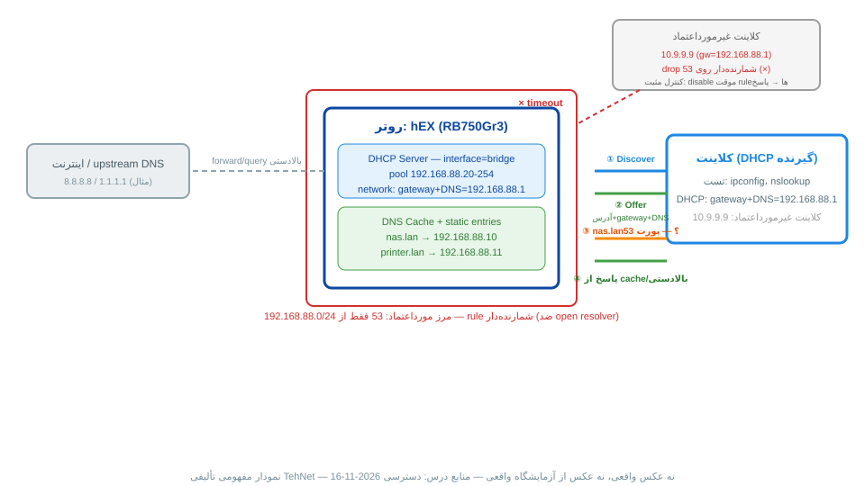

وضعیت درس: DRAFT / NEEDS_CHANGES → بازنگریشده طبق MANAGER_REVIEW 6923833096 — در انتظار مرور.
آموزش تصویری از سری MikroTik و routing؛ مخاطب: کارشناس شبکهٔ مبتدی.
سناریوی کاملاً فرضی و آموزشی با دادهٔ ساختگی؛ هیچ شبکهٔ واقعی دستکاری نشده است.
نمودار مفهومی و تألیفی است (نه عکس واقعی)؛ اجرای RouterOS این درس NOT_RUN است (بدون fixture مجاز — جدا از بررسیهای استاتیک).
DHCP Server روی MikroTik چهار جزء لازم دارد (IP روی interface، pool، تنظیم network، خود server) و DNS Cache سرعت حل نام را بالا میبرد. با `allow-remote-requests=yes` روتر روی UDP/TCP 53 همهٔ آدرسهایش گوش میدهد — پس مرزِ «کلاینت مورداعتماد» باید با فایروال تعریف شود وگرنه روتر open resolver میشود. اگر دستگاهی IP نمیگیرد، ترتیب بررسی: lease فعال است؟ pool هست؟ network تعریف شده؟ interface درست گره خورده؟
قید صریح پیشنیاز (بخشی از مبنا): DHCP server این درس روی interface `bridge` بسته میشود و gateway کلاینتها 192.168.88.1 است — همان آدرسی که روی `bridge` تنظیم میکنیم. اگر IP شما روی interface دیگری است، همهٔ `interface=` و `gateway=` همین درس را با نام همان interface جایگزین کنید؛ بدون این گرهزدن، هیچ گام این درس معنا ندارد.
| نقش | مدل/مقدار | توضیح |
|---|---|---|
| --- | --- | --- |
| روتر | hEX (RB750Gr3)، RouterOS v7.16+ | تنظیمات کارخانه (reset شده)؛ ether1 در لیست WAN، ether2-5 عضو `bridge` |
| LAN | `bridge` با 192.168.88.1/24 | gateway کلاینتها؛ همان interface که DHCP server به آن گره میخورد |
| WAN | ether1 به مودم | NAT کارخانه (masquerade 192.168.88.0/24) دستنخورده |
| کلاینت آزمایشی | یک لپتاپ DHCP-گیرنده | برای تستهای مثبت |
| کلاینت «غیرمورداعتماد» | همان لپتاپ با IP دستی 10.9.9.9/24 | فقط برای تست منفی DNS |
| مقصد | آدرس | نحوهٔ تخصیص |
|---|---|---|
| --- | --- | --- |
| روتر (gateway/DNS) | 192.168.88.1 | روی `bridge` — خارج از pool |
| NAS | 192.168.88.10 | lease رزروی مدیریتشدهٔ DHCP (داخل pool نیست؛ سرور آن را به دیگری نمیدهد) |
| Printer | 192.168.88.11 | lease رزروی مدیریتشدهٔ DHCP |
| رنج IP دستی مجاز (فقط در صورت ضرورت) | 192.168.88.2-9 | خارج از pool؛ تخصیص دستی روی دستگاه |
| pool دینامیک | 192.168.88.20-250 | DHCP |
| خودکار انتهای LAN | 192.168.88.254 | آخرین آدرس pool |

شرح متنی نمودار (جایگزین تصویر برای دسترسپذیری): سمت راست، لپتاپ کلاینت (DHCP گیرنده). وسط، روتر hEX با دو بلوک داخلی: «DHCP Server (گرهخورده به bridge، pool 20-250، network با gateway/DNS)» و «DNS Cache + static entries (nas.lan → 192.168.88.10)». سمت چپ، اینترنت/forwardکنندهٔ بالادستی. چهار فلش توالی: (1) Discover از کلاینت، (2) Offer با آدرس+gateway 192.168.88.1+DNS 192.168.88.1، (3) پرسوجوی نام کلاینت به 192.168.88.1 روی پورت 53، (4) پاسخ از cache یا بالادستی. یک مرز خطچین قرمز «مرز مورداعتماد: فقط 192.168.88.0/24 روی پورت 53» دور بلوک روتر کشیده شده و یک کلاینت خاکستری بیرون مرز با پرسوجوی ردشده (×) نشان داده شده است.
/system backup save name=pre-dhcp-dns
/export file=pre-dhcp-dnsپیکربندی را در Safe Mode وینباکس اعمال کنید؛ تا زمان تأیید تستها، قطع اتصال یعنی بازگشت خودکار تغییرات. (Safe Mode قابلیت خود RouterOS است؛ URL جداگانهای برایش ادعا نمیشود.)
سند رسمی DHCP Server چهار شرط را فهرست میکند؛ در همین ترتیب:
# (۱) IP روی interface سرویسدهنده — از قبل روی bridge هست؛ اگر ندارید:
/ip address
add address=192.168.88.1/24 interface=bridge comment="gateway+DNS lan"
# (۲) pool — آدرس خود روتر داخل pool نباشد (سند رسمی)
/ip pool
add name=lan-pool ranges=192.168.88.20-192.168.88.254
# (۳) network — همان چیزی که به کلاینت میرسد؛ gateway/DNS همان bridge IP
/ip dhcp-server network
add address=192.168.88.0/24 gateway=192.168.88.1 dns-server=192.168.88.1
# (۴) server — گره interface به pool؛ روی پلِ خالیِ بیIP کار نمیکند
/ip dhcp-server
add name=lan-dhcp interface=bridge address-pool=lan-pool lease-time=8h disabled=no
# رزروهای مدیریتشده (تفاوت با IP دستی: جدول بعد از عیبیابی)
/ip dhcp-server lease
add address=192.168.88.10 mac-address=AA:BB:CC:DD:EE:10 server=lan-dhcp comment="NAS"
add address=192.168.88.11 mac-address=AA:BB:CC:DD:EE:11 server=lan-dhcp comment="Printer"/ip dns
set servers=8.8.8.8,1.1.1.1 allow-remote-requests=yes cache-size=4096KiB
/ip dns static
add name=nas.lan address=192.168.88.10
add name=printer.lan address=192.168.88.11
add name=router.lan address=192.168.88.1از این لحظه روتر روی UDP و TCP پورت 53 روی همهٔ آدرسهایش پاسخ میدهد — دقیقاً همان رفتاری که سند رسمی DNS هشدارش را میدهد: دیوارآتش پیشفرض پرسوجوهای از اینترنت را میاندازد، اما «اگر فایروال خودتان را دارید، خودتان هم drop کنید تا روتر open resolver نشود». گام ۳ همین مرز را میسازد.
دو حالت صریح:
حالت الف — فایروال کارخانه (این مبنا): زنجیرهٔ input پیشفرضِ hEX ترافیک ناشناس از WAN را میاندازد؛ پرسوجوی 53 از اینترنت پاسخ نمیگیرد. هنوز باید پذیرشش را با تست منفیِ گام ۴ (شمارندهٔ drop) ثبت کنید.
حالت ب — اگر زنجیرهٔ input را جایگزین میکنید (مثل رویکرد M2): مجموعهٔ کامل با قید source:
# جایگزینی کامل input (پشتیبان گام ۰ گرفته شده) — فقط بخش مرتبط با 53 و بستن پایانی:
/ip firewall filter
remove [find chain=input]
add chain=input action=accept connection-state=established,related,untracked comment="TN-M3 est/rel"
add chain=input action=drop connection-state=invalid comment="TN-M3 invalid"
add chain=input action=accept protocol=icmp comment="TN-M3 ping/diag"
add chain=input action=accept protocol=udp dst-port=67 in-interface-list=LAN comment="TN-M3 DHCP"
add chain=input action=accept protocol=udp dst-port=53 src-address=192.168.88.0/24 comment="TN-M3 DNS udp فقط مورداعتماد"
add chain=input action=accept protocol=tcp dst-port=53 src-address=192.168.88.0/24 comment="TN-M3 DNS tcp فقط مورداعتماد"
add chain=input action=accept protocol=tcp dst-port=8291,22 src-address=192.168.88.0/24 comment="TN-M3 winbox/ssh محلی"
add chain=input action=accept protocol=tcp dst-port=80,443 src-address=192.168.88.0/24 comment="TN-M3 webfig محلی"
add chain=input action=drop comment="TN-M3 input default drop (شامل WAN و هر منبع غیرمورداعتماد)"بعد از اعمال، شمارندهٔ rule آخر را ببینید:
/ip firewall filter print stats where chain=inputهر افزایش شمارنده روی ruleهای drop هنگام پرسوجوی 53 از منبع غیرمورداعتماد = مرز کار میکند.
تست سمت روتر (`:resolve`) فقط cache خود روتر را میسنجد و پذیرش سمت کلاینت نیست — پذیرش با کلاینت واقعی انجام میشود:
| # | کلاینت | عمل | نتیجهٔ موردانتظار | نوع |
|---|---|---|---|---|
| --- | --- | --- | --- | --- |
| 1 | لپتاپ DHCP | `ipconfig /all` (ویندوز) | IPv4 از 192.168.88.20-254؛ Gateway=192.168.88.1؛ DHCP Server=192.168.88.1؛ DNS=192.168.88.1 | مثبت |
| 2 | همان کلاینت | `nslookup nas.lan` (بدون تعیین سرور) | 192.168.88.10 از DNS روتر | مثبت |
| 3 | همان کلاینت | `nslookup printer.lan` | 192.168.88.11 | مثبت |
| 4 | همان کلاینت | `nslookup www.google.com` | پاسخ (از cache/بالادستی) | مثبت |
| 5 | همان کلاینت | `ping 192.168.88.1` | reply | مثبت |
| 6 | لپتاپ با IP دستی 10.9.9.9/24 | `nslookup nas.lan 192.168.88.1` | هیچ پاسخی (timeout) + شمارندهٔ drop input بالا میرود | منفی |
| 7 | لپتاپ با IP دستی 10.9.9.9/24 | `ping 192.168.88.1` | timeout (فقط در حالت ب) | منفی |
| 8 | سمت روتر | `:put [:resolve nas.lan]` | 192.168.88.10 — فقط بررسی cache روتر؛ بهجای تست 1-3 نیست | ابزار |
بررسیهای روتری برای عیبیابی:
/ip dhcp-server lease print
/ip dhcp-server print stats
/ip dns cache print
/log print where message~"dhcp"این تفکیک مهم است: lease رزروی یعنی سرور خودش آدرس را برای یک MAC رزرو کرده — تعارض ندارد و خطا نیست، هر جا هم که باشد (داخل یا خارج pool) سرور مالکیتش را میشناسد. خطری که وجود دارد IP دستیِ روی NIC دستگاهِ داخل رنج pool است: سرور ممکن است همان آدرس را به دستگاه دیگری بدهد و پیام conflict بیاید.
| نشانه | علت محتمل | بررسی | راهحل |
|---|---|---|---|
| --- | --- | --- | --- |
| کلاینت IP نمیگیرد | server disabled یا invalid | `/ip dhcp-server print` | اگر invalid: IP روی interface نیست → گام ۱ جزء (۱) |
| کلاینت IP میگیرد ولی gateway ندارد | جزء (۳) network تعریف نشده | `/ip dhcp-server network print` | network با gateway/DNS همان subnet |
| «conflicting» روی دستگاه | IP دستی روی NIC داخل رنج pool | `/ip dhcp-server lease print` + آدرسهای دستی دستگاهها | رزروی کنید (lease) یا IP دستی را به 192.168.88.2-9 ببرید؛ lease رزروی خودش خطا نیست |
| `nas.lan` حل نمیشود از کلاینت | DNS کلاینت روی روتر نیست | `ipconfig /all` | در network، `dns-server=192.168.88.1` |
| `nas.lan` حل نمیشود حتی از روتر | static entry جا افتاد یا آدرسش با رزرو نمیخواند | `/ip dns static print` | نام/آدرس را با جدول آدرسدهی همتراز کنید |
| پرسوجوی 53 از اینترنت جواب میگیرد | فایروال سفارشی بدون drop، یا allow-remote-requests با مرز تعریفنشده | شمارندههای `/ip firewall filter print stats` | گام ۳ حالت ب را کامل اعمال کنید |
| lease زودخالی میشود | lease-time خیلی کوتاه | `/ip dhcp-server print` | 8h یا بیشتر برای LAN پایدار |
| پیوند | مقصد |
|---|---|
| --- | --- |
| درس قبلی (پیشنیاز) | VLAN برای دفتر کوچک (M2) |
| مفهوم انتخاب روتر | مقایسهٔ روترهای میکروتیک (M1) |
| نقشهٔ کامل سری | topic map |
| عیبیابی/کانفیگ DHCP-DNS سازمان شما | خدمات میکروتیک TehNet |
| درسهای بعدی سری (M4 inter-VLAN، M5 VPN، M6 dual-WAN) | در نوبتهای بعد تولید میشوند — فعلاً فقط در topic map |